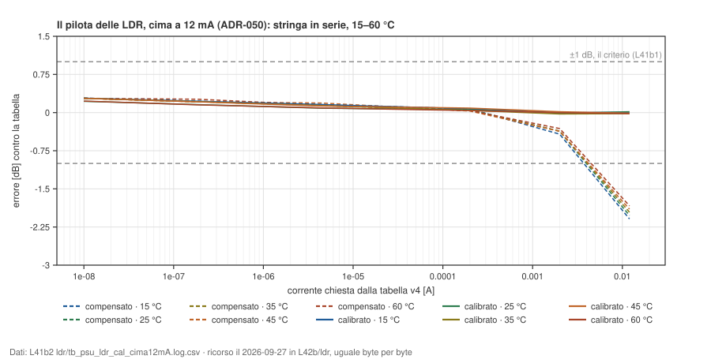

Scheda audio · deck veloci corsi il 2026-09-27 (L42a) sul circuito di L28 · mute da L29d2, L29e e L41b2 · interblocco da L35 e L36 · calore da L30 · alimentatore da L41a–L41c e L30, ricorso il 2026-09-27 (L42b)
Dossier di misura del preamplificatore di linea
Classe A pura a componenti discreti, senza operazionali nel percorso del segnale. Guadagno 0 / +3 / +10 dB, trim 0 / −6 / −12 dB sull’uscita variabile, mute graduale a LDR a monte e relè al jack. Le due schede: la scheda audio, poi l’alimentatore, coi rail lineari, il sorvegliante in hardware e il temporizzatore che ordina mute, guadagno e rete.
- Guadagni a 1 kHz
- −0,01 · +3,04 · +9,96dB · 0 / +3 / +10 · sorgente 1,5 Ω
- V1, margine minimo
- 62,08°soglia 60° · guardia 2,08° · Blocco B · 0 dB
- Headroom, NC-009
- +6,48 dBmetrica M1 · +10 dB col trim a −6 dB
- E3, min |Zin|
- 110,7 kΩogni posizione del trim, LDR del mute comprese
- E5, catena peggiore
- 5,05 µVLDR comprese · 1/f solo sulla coppia d’ingresso
- Scarto ADR-014
- 3,29·10−4dB a 20 kHz rif. 1 kHz · peggiore dei 3 modi
- PSRR, peggiore
- 23,03 dBa 10 kHz
- E4, Re(Zout) max
- 60,09 Ωal jack · 20 Hz–20 kHz · 3 uscite, costante col volume
- Δ, angolo minimo
- 16,91 mscol micro in reset · soglia 10 ms (ADR-045)
- Guasto dell’alimentatore, al jack
- 56,2 dB SPLil peggiore sul circuito vero (L41c) · di picco a 1 m
.include dei deck, non dichiarata.Il progetto sostituisce un Technics SU-9070 la cui struttura di guadagno richiede 46 dB di attenuazione, causa misurabile della mancanza di dinamica lamentata. La topologia canonica è in circuits/preamp/; i banchi di prova in spice/preamp/tb/; i dati dei deck veloci in docs/preamp/data/2026-09-27/L42/dopo/, corsi oggi sul circuito di main; quelli del mute, dell’interblocco e del calore nelle cartelle dei loro lotti, nominate sotto ogni sezione.
0Il contratto: il Product Requirements Book
Approvato dall'utente il 2026-09-27 (L42c): «l'ho letto e posso firmarlo con le integrazioni attuali». Registrato da ADR-053. Da qui, cambiare una voce vuole una ADR.
Che cos'è, e come sta con gli altri documenti
È il contratto fra l'utente e il team: che cosa l'apparecchio deve fare, e perché, in al massimo tre righe per voce. È l'ingresso di ogni revisione e di ogni lotto che segue.
Non è una seconda copia dei requisiti, perché lavora su un altro livello:
- qui c'è il cosa e il perché, nelle parole di chi usa l'apparecchio;
REQUIREMENTS.mdha il come si misura: soglie, metodi, casi da coprire;- le ADR (
decisions/) hanno il come si è deciso.
La riga «Dettagli» di ogni voce nomina i requisiti tecnici e le ADR che la realizzano. Se un requisito tecnico e una voce di qui si contraddicono, è un difetto da decidere con l'utente, non una seconda verità.
I gradini sulle uscite si dicono in dB SPL di picco a 1 m, con la catena di NC-028: il finale ×21,1, le Heresy da 96 dB/1 W/1 m. Una stanza silenziosa sta a 25–35 dB(A). «Su ogni uscita» vuol dire la principale e le due fisse.
A. Lo scopo
PR-1 Sostituire il Technics SU-9070 e correggere la sua struttura di guadagno. Con le sorgenti e il finale di casa il volume deve lavorare a circa 30 dB di attenuazione, non a 46: è la causa misurabile della mancanza di dinamica.
Dettagli: E1, E3b · ADR-001 · il contesto d'uso in REQUIREMENTS.md.
PR-2 Per questa catena, non per una generica. Sorgenti: il phono MC a valvole (0,5 V, 430 Ω) e il FiiO K11 (2,7 V). Carichi: il cj EV250 sull'uscita principale, il Singxer SA-1 e lo Stax SRM-T1 sulle due fisse. Diffusori Klipsch Heresy.
Dettagli: «Contesto d'uso» in REQUIREMENTS.md.
B. Il suono
PR-3 Guadagno 0 dB di base, +3 e +10 dB quando servono. Il preamplificatore non amplifica per default. I due livelli in più servono a una sorgente debole.
PR-4 Un circuito puro: classe A, tutto a componenti discreti, niente operazionali né servo nel percorso del segnale. Un solo stadio, progettato una volta e usato ovunque, così ogni uscita suona uguale.
Dettagli: T1, T2, T3, T6 · ADR-003, ADR-006, ADR-007, ADR-014, ADR-022, ADR-023.
PR-5 Silenzioso sulle trombe. Il rumore in uscita, alimentazione compresa, resta sotto i 10 µV (circa +13 dB SPL a 1 m, inudibile in poltrona): le Heresy da 96 dB non perdonano.
PR-6 Invisibile alla catena. Non carica il phono a valvole (Zin ≥ 100 kΩ), pilota il finale e i cavi con Zout < 100 Ω costante col volume, e accetta i 2,7 V del K11 senza saturare.
Dettagli: E3, E4, E6, E8, V3 · ADR-002, ADR-007, ADR-027 · NC-009.
PR-7 Stabile con qualunque cavo e carico reale, in ogni posizione di comandi e volume: margine di fase ≥ 60°, una scelta severa e consapevole.
PR-8 Niente di aspro. La distorsione non cresce verso gli acuti, le armoniche alte (dalla 5ª in su) restano molto sotto le basse, e l'intermodulazione è bassa; un tetto complessivo di THD+N fa da garanzia. Le soglie si fissano con l'utente sulle prime misure.
Dettagli: V4 · ADR-053: il carattere conta più del numero, nessuna preferenza sulla 2ª.
PR-9 Piatto in banda. Su ogni uscita, in ogni modo, posizione di trim e volume, coi carichi reali: entro ±0,2 dB da 20 Hz a 20 kHz, riferito a 1 kHz. Nessuna banda minima o massima imposta oltre questo.
PR-10 I due canali uguali e separati. Fra sinistro e destro al più 0,2 dB di differenza di livello, in ogni posizione di volume, trim e guadagno, da 20 Hz a 20 kHz; la diafonia fra i canali ≤ −70 dB nella stessa banda.
Dettagli: E10, E11 · ADR-053 · la sorgente non selezionata resta fuori.
PR-11 Niente continua verso il finale. A regime ogni uscita porta al jack al più 1 mV di continua, anche coi condensatori montati per prova d'ascolto (PR-12): le prove si fanno con i tipi di una lista ammessa.
Dettagli: E12, P6 · ADR-007, ADR-053 · l'offset interno resta senza soglia.
PR-12 Il giudizio del suono è dell'utente, sull'hardware. Condensatori di segnale e resistenze critiche si cambiano senza dissaldare, per provarli all'ascolto. Nessun agente dichiara come suona il circuito.
Dettagli: P6 · AGENTS.md.
C. L'uso e i comandi
PR-13 Quattro ingressi, tre uscite. Quattro ingressi RCA a relè. Un'uscita principale col volume, per il finale; due uscite fisse, copia fedele della sorgente, per Singxer e Stax.
PR-14 L'ingresso si cambia quando si vuole, senza clic. Senza musica, cambiare sorgente lascia sulle uscite al più 100 µV (~33 dB SPL, come PR-20); con la musica il salto fra i due programmi è accettato. Ogni ingresso, anche non selezionato, sta a 0 V.
Dettagli: F1, V2 · ADR-053 · il selettore è ancora da progettare.
PR-15 Le uscite fisse sono fedeli quanto la principale: soddisfano ogni requisito che vale per lei, a guadagno 0 dB ± 0,1 dB. Se la tolleranza si rivela costosa, si rilassa con l'utente e con una ADR.
PR-16 Il volume è un attenuatore a scatti, con un commutatore rotativo e resistenze di precisione.
PR-17 Il trim (0, −6, −12 dB) agisce solo sull'uscita principale e si cambia solo in mute. Tre LED dicono il suo stato vero, non la posizione del comando.
PR-18 Il guadagno si cambia solo in mute, con tre LED del suo stato vero. A relè a riposo, per un guasto o all'accensione, è sempre 0 dB: mai più alto.
Dettagli: F5 e la sua nota, F11 · ADR-026, ADR-030, ADR-041.
PR-19 Tutto sul frontale, niente di più. Selettore, volume, trim, guadagno e l'interruttore di mute, rotativi, col LED rosso di mute. Niente telecomando, niente digitale, niente toni o filtri, niente bilanciato, niente phono integrato.
D. Nessun rumore fastidioso sulle uscite
PR-20 Nessuna commutazione si sente. Cambiare ingresso, guadagno o trim, inserire o togliere il mute, accendere o spegnere dal frontale: su ogni uscita al più 100 µV di picco (~33 dB SPL a 1 m, il livello di una stanza silenziosa), in ogni condizione.
Dettagli: V2 (A e B) · ADR-032, ADR-035, ADR-036, ADR-044, ADR-045.
PR-21 Il mute sfuma, non taglia. Con la musica, inserire o togliere il mute non fa saltare il livello più di 20 dB in 100 ms: come il pseudo-mute del Technics, che non ha mai dato fastidio.
E. Fallire senza danni
PR-22 Il mute regge a tempo indefinito, e ogni uscita regge un corto, anche permanente, senza che niente si scaldi oltre i propri limiti.
Dettagli: F6, P7, T1 (eccezione) · ADR-012, ADR-021, ADR-023.
PR-23 Se manca la rete o si guasta l'alimentatore, le uscite si staccano da sole, in hardware, prima che il circuito esca di regolazione. Al jack principale l'obiettivo è ≤ 2 mV (~60 dB SPL a 1 m), e in nessun caso più di 0,87 V (~112 dB, il tetto di non-danno).
PR-24 La sicurezza non dipende dal firmware. Senza firmware, con il micro bloccato o in reset, l'apparecchio resta muto e il guadagno non può cambiare con le uscite collegate.
PR-25 Accensione e spegnimento morbidi dal frontale; l'interruttore posteriore stacca tutto. Da spento sul frontale l'apparecchio resta in standby e consuma ≤ 0,5 W alla presa, trasformatore compreso: un obiettivo nostro (l'apparecchio è per uso personale), rilassabile.
PR-26 Collegato alla rete, sicuro. Un'analisi di sicurezza di rete è obbligatoria prima della fabbricazione; senza, il progetto non va avanti.
F. Il fisico
PR-27 Un solo telaio, grande quanto il SU-9070 (450 × 130 × 367 mm), con l'alimentatore a bordo, due trasformatori toroidali e nessun alimentatore switching.
PR-28 Sta in un vano chiuso della libreria: con la stanza a 35 °C, dentro il telaio non più di 60 °C, se attorno restano almeno 3 cm.
PR-29 Si può costruire e riparare. Nessuna parte a fine vita, e ogni dispositivo attivo del segnale ha un modello del costruttore, così le misure simulate sono credibili.
Come si è arrivati qui
La bozza (23 voci) è stata scritta rileggendo REQUIREMENTS.md. Rileggendolo sono emersi sette punti senza un requisito, decisi con l'utente il 2026-09-27, uno alla volta (ADR-053):
| Punto aperto | Decisione | Voce |
|---|---|---|
| La distorsione non aveva una soglia | «niente di aspro»; nessuna preferenza sulla 2ª armonica; le soglie sulle prime misure | PR-8 |
| La risposta in frequenza non aveva una soglia | ±0,2 dB da 20 Hz a 20 kHz, e nient'altro | PR-9 |
| Equilibrio fra i canali e diafonia | ≤ 0,2 dB e ≤ −70 dB; la sorgente non selezionata fuori | PR-10 |
| Il cambio d'ingresso a caldo | a caldo, senza clic | PR-14 |
| L'offset in continua alle uscite | ≤ 1 mV al jack; prove d'ascolto dentro una lista di tipi ammessi | PR-11 |
| Le uscite fisse, fedeli quanto? | come la principale, 0 dB ± 0,1 dB, rilassabile | PR-15 |
| Il consumo in standby, «entro il regolamento» | ≤ 0,5 W alla presa, obiettivo nostro, rilassabile | PR-25 |
1Il blocco di guadagno
Il blocco è uno solo (ADR-006) e il prodotto lo usa otto volte: per canale, il blocco A (buffer d’ingresso), i due buffer delle uscite fisse (ADR-023) e il blocco B (uscita variabile). È l’oggetto da giudicare.

2Il preamplificatore intero

3Punti di lavoro
Deck spice/preamp/tb/tb_op.cir · dati docs/preamp/data/2026-09-27/L42/dopo/tb_op/
Modelli del costruttore: 1N4148, LS352, LSK489, MJE15032, MJE15033, MMBT5401, MMBT5551 · segnaposto scritti a mano: nessuno · rumore 1/f solo su LSK489, KF = 0 sugli altri (NC-004)
Corrente dai rail e punto di lavoro di ogni dispositivo attivo, a ingresso a massa. Il trim sta dopo il condensatore d’uscita del blocco A e non tocca la continua.
| Grandezza | Valore |
|---|---|
| Corrente dal rail +15 V | 32,5947 mA |
| Corrente dal rail −15 V | 33,6152 mA |
| Dispositivo | IC / ID [mA] | VBE / VGS [V] | VBC [V] |
|---|---|---|---|
| JQ110A | 2,2819 | -0,1308 | — |
| JQ110B | 2,2378 | -0,1405 | — |
| Q106 | 4,5197 | 0,7044 | -12,716 |
| Q117 | 2,2609 | 0,6873 | -3,459 |
| Q118 | 2,2172 | 0,6868 | -3,5564 |
| Q121A | -2,2046 | 0,7037 | 0,5093 |
| Q121B | -2,2081 | 0,7036 | 0,4205 |
| Q122 | -6,7972 | 0,6579 | -12,6155 |
| Q125 | 6,6872 | 0,7147 | -11,4851 |
| Q127 | 5,8315 | 0,7121 | -0,2746 |
| Q132 | 20,291 | 0,5658 | -13,997 |
| Q133 | -20,401 | 0,5389 | -13,9872 |
4Risposta in frequenza
Deck spice/preamp/tb/tb_ac.cir · dati docs/preamp/data/2026-09-27/L42/dopo/tb_ac/
Modelli del costruttore: 1N4148, LS352, LSK489, MJE15032, MJE15033, MMBT5401, MMBT5551 · segnaposto scritti a mano: nessuno · rumore 1/f solo su LSK489, KF = 0 sugli altri (NC-004)

| Curva | 20 Hz | 1 kHz | 20 kHz | 100 kHz |
|---|---|---|---|---|
| 0 dB · sorgente 1,5 Ω (K11) | −0,0096 dB | −0,0070 dB | −0,0039 dB | 0,0557 dB |
| 0 dB · sorgente 2500 Ω (attenuatore a metà) | −0,0313 dB | −0,0287 dB | −0,0254 dB | 0,0367 dB |
| +3 dB · sorgente 1,5 Ω (K11) | 3,0367 dB | 3,0393 dB | 3,0137 dB | 2,4624 dB |
| +3 dB · sorgente 2500 Ω (attenuatore a metà) | 3,0150 dB | 3,0176 dB | 2,9922 dB | 2,4441 dB |
| +10 dB · sorgente 1,5 Ω (K11) | 9,9604 dB | 9,9627 dB | 9,8286 dB | 7,4663 dB |
| +10 dB · sorgente 2500 Ω (attenuatore a metà) | 9,9387 dB | 9,9410 dB | 9,8073 dB | 7,4496 dB |
La claim falsificabile di ADR-014
L’attenuatore a gradini ha un’impedenza d’uscita che varia con la manopola. Se il cascode d’ingresso fa il suo lavoro, la forma della risposta non si muove: la risposta a 20 kHz riferita a quella a 1 kHz resta la stessa con la sorgente a 1,5 Ω e a 2500 Ω, in ogni modo.

| Modo | scarto assoluto a 1 kHz | scarto assoluto a 20 kHz | 20 kHz riferito a 1 kHz — la claim |
|---|---|---|---|
| 0 dB | −0,02167 dB | −0,02157 dB | 1,07·10−4 dB |
| +3 dB | −0,02167 dB | −0,02152 dB | 1,51·10−4 dB |
| +10 dB | −0,02167 dB | −0,02135 dB | 3,29·10−4 dB |
Ogni scarto è «sorgente 2500 Ω meno sorgente 1,5 Ω». Le colonne di scarto assoluto coincidono a 1 kHz e a 20 kHz perché sono una perdita di livello a banda larga, il partitore fra la sorgente e la Zin del blocco: non misurano la claim. La claim è l’ultima colonna.
Il taglio in bassa, col carico da 50 kΩ
Con il carico Stax-like da 50 kΩ: −0,0148 dB a 1 kHz, −0,0223 dB a 20 Hz, −0,1329 dB a 5 Hz. Il polo è quello del condensatore d’uscita da 4,7 µF (E8, ADR-007).
5Stabilità: la matrice V1
Deck spice/preamp/tb/tb_loop.cir · dati docs/preamp/data/2026-09-27/L42/dopo/tb_loop/ (blocco B)
Modelli del costruttore: 1N4148, LS352, LSK489, MJE15032, MJE15033, MMBT5401, MMBT5551 · segnaposto scritti a mano: nessuno · rumore 1/f solo su LSK489, KF = 0 sugli altri (NC-004)
Deck spice/preamp/tb/tb_loop_blockA.cir · dati docs/preamp/data/2026-09-27/L42/dopo/tb_loop_blockA/ (blocco A)
Modelli del costruttore: 1N4148, LS352, LSK489, MJE15032, MJE15033, MMBT5401, MMBT5551 · segnaposto scritti a mano: nessuno · rumore 1/f solo su LSK489, KF = 0 sugli altri (NC-004)
Deck spice/preamp/tb/tb_loop_bufferfissa.cir · dati docs/preamp/data/2026-09-27/L42/dopo/tb_loop_bufferfissa/ (buffer delle fisse)
Modelli del costruttore: 1N4148, LS352, LSK489, MJE15032, MJE15033, MMBT5401, MMBT5551 · segnaposto scritti a mano: nessuno · rumore 1/f solo su LSK489, KF = 0 sugli altri (NC-004)
Soglia: 60° su ogni combinazione della matrice (ADR-019). Dove si applica la sonda lo dice ADR-024: la sonda capacitiva è il cavo d’interconnessione e sta al jack, dopo i 47 Ω e il 4,7 µF, sul blocco B e sui buffer delle fisse; il verdetto è il minimo sulla spazzata fino a 4,7 nF, non il valore a 4,7 nF. Il blocco A pilota il cablaggio interno fino all’attenuatore e si giudica con una capacità realistica, ≤ 1 nF. La sonda sul nodo d’uscita resta come informazione.
Iniezione di tensione al gate del JFET invertente: quel nodo non assorbe corrente e la rete di controreazione lo pilota a bassa impedenza, quindi l’iniezione semplice è esatta. I relè commutano la rete di controreazione, quindi il margine è diverso nei tre modi, e l’impedenza dell’attenuatore cambia con la manopola: per questo si spazza tutto.
| Istanza | Dove cade il minimo | Minimo della spazzata | A 4,7 nF | Sonda sul nodo | Esito |
|---|---|---|---|---|---|
| Blocco B · 0 dB | sorgente 2,611 kΩ · carico 100 kΩ · cavo 4,7 nF | 62,076° | 62,076° | 57,992° | conforme |
| Blocco B · +3 dB | sorgente 2,611 kΩ · carico 100 kΩ · cavo 4,7 nF | 76,197° | 76,197° | 73,114° | conforme |
| Blocco B · +10 dB | sorgente 2,611 kΩ · carico 100 kΩ · cavo 4,7 nF | 96,655° | 96,655° | 96,576° | conforme |
| Blocco A · trim 0 dB | sorgente 430 Ω · cablaggio 1 nF | 67,749° | — | — | conforme |
| Blocco A · trim −6 dB | sorgente 430 Ω · cablaggio 1 nF | 69,910° | — | — | conforme |
| Blocco A · trim −12 dB | sorgente 430 Ω · cablaggio 1 nF | 70,058° | — | — | conforme |
| Buffer delle fisse | carico 50 kΩ · cavo 4,7 nF | 63,214° | — | 58,156° | conforme |
Blocco B: 110 righe per modo al jack, sorgenti dell’attenuatore da 1 mΩ a (10 kΩ + Thévenin del trim)/4, carichi 100 kΩ e 10 kΩ. Il Miller è da 1 nF (ADR-042): con i modelli del costruttore il blocco a guadagno unitario era sceso sotto i 60° (NC-034, chiusa). Blocco A: scala 845 / 464 / 464 Ω; senza trim il minimo è 67,683° (sorgente 430 Ω, 1 nF). Con 4,7 nF sul cablaggio, che ADR-024 non chiede, il blocco A a trim 0 dB scende a 58,38°.

Al jack il margine non è monotono: a 0 dB il minimo, 62,08°, cade a 4,7 nF, e a 4,7 nF la stessa curva risale a 62,08°. Letto a 4,7 nF il verdetto sarebbe ottimista. Sul nodo, dove nessun cavo vero sta, lo stesso blocco scende a 57,99°.
Il guadagno d’anello

| Blocco B, sorgente 2,5 kΩ, carico 100 kΩ | |T| a 10 Hz | frequenza d’incrocio | margine |
|---|---|---|---|
| 0 dB · cavo 4,7 nF | 81,19 dB | 411,229 kHz | 62,090° |
| +3 dB · cavo 4,7 nF | 77,71 dB | 354,434 kHz | 76,209° |
| +10 dB · cavo 4,7 nF | 70,26 dB | 152,42 kHz | 96,661° |
6Il trim e l’impedenza d’ingresso
Deck spice/preamp/tb/tb_trim.cir · dati docs/preamp/data/2026-09-27/L42/dopo/tb_trim/
Modelli del costruttore: 1N4148, LS352, LSK489, MJE15032, MJE15033, MMBT5401, MMBT5551 · segnaposto scritti a mano: nessuno · rumore 1/f solo su LSK489, KF = 0 sugli altri (NC-004)
Il trim è uno solo, fra l’uscita del blocco A e l’attenuatore (ADR-027): le uscite fisse prendono il segnale prima di lui e restano copia fedele della sorgente. Scala per canale 845 / 464 / 464 Ω, a relè bistabili. L’attenuazione è misurata col carico dell’attenuatore.
| Posizione | Attenuazione a 1 kHz |
|---|---|
| 0 dB | −0,0001 dB |
| −6 dB | −6,0030 dB |
| −12 dB | −11,9394 dB |
E3 chiede ≥ 100 kΩ al connettore d’ingresso in ogni posizione del trim, sul minimo di |Zin| fra 20 Hz e 20 kHz («Nota su E3»). Col trim sul ramo variabile il connettore vede il blocco A; la capacità del selettore è spazzata.
| Posizione del trim | selettore 1 fF | selettore 22 pF | selettore 68 pF | Esito |
|---|---|---|---|---|
| senza trim (riferimento) | 998,523 kΩ | 341,975 kΩ | 120,054 kΩ | — |
| 0 dB | 998,554 kΩ | 341,976 kΩ | 120,054 kΩ | conforme |
| −6 dB | 998,55 kΩ | 341,976 kΩ | 120,054 kΩ | conforme |
| −12 dB | 998,549 kΩ | 341,976 kΩ | 120,054 kΩ | conforme |
Con le LDR del mute all’ingresso
Deck docs/preamp/data/2026-09-26/L41b2/e3_e5/tb_e3_e5_ldr_cima12mA.cir · dati docs/preamp/data/2026-09-26/L41b2/e3_e5/ · copia del deck di L29b2 con la cima a 12 mA (ADR-050), fatta in L41b2
Modelli del costruttore: 1N4148, LS352, LSK489, MJE15032, MJE15033, MMBT5401, MMBT5551 · segnaposto scritti a mano: nessuno · rumore 1/f solo su LSK489, KF = 0 sugli altri (NC-004)
Il mute graduale mette due LDR all’ingresso del blocco A (ADR-039): una in serie, una verso massa. In ascolto la cella in serie è accesa e vale 113,485 Ω; la derivazione è spenta. Il minimo di |Zin| su ogni posizione del trim:
| Stato delle LDR | selettore 1 fF | selettore 22 pF | selettore 68 pF | Esito |
|---|---|---|---|---|
| in ascolto (serie a 12 mA, derivazione spenta) | 764,482 kΩ | 277,605 kΩ | 110,715 kΩ | conforme |
| a metà del profilo | 2003 kΩ | 324,871 kΩ | 116,394 kΩ | conforme |
| in mute (derivazione a 12 mA) | 1551 kΩ | 304,464 kΩ | 113,575 kΩ | conforme |
| Catena col trim, peggiore su trim, modo, attenuatore e sorgente | Rumore |
|---|---|
| LDR in curva B (tipica) | 5,033 µV |
| LDR in curva D (la più resistiva) | 5,049 µV |
| senza LDR | 4,996 µV |
7Rumore in uscita
Deck spice/preamp/tb/tb_zout_psrr_noise.cir · dati docs/preamp/data/2026-09-27/L42/dopo/tb_zout_psrr_noise/
Modelli del costruttore: 1N4148, LS352, LSK489, MJE15032, MJE15033, MMBT5401, MMBT5551 · segnaposto scritti a mano: nessuno · rumore 1/f solo su LSK489, KF = 0 sugli altri (NC-004)
Deck spice/preamp/tb/tb_noise_breakdown.cir · dati docs/preamp/data/2026-09-27/L42/dopo/tb_noise_breakdown/
Modelli del costruttore: 1N4148, LS352, LSK489, MJE15032, MJE15033, MMBT5401, MMBT5551 · segnaposto scritti a mano: nessuno · rumore 1/f solo su LSK489, KF = 0 sugli altri (NC-004)
E5 chiede meno di 10 µV RMS in uscita fra 20 Hz e 20 kHz, non pesati, e di questi 1 µV è la quota dell’alimentazione (ADR-020). Ogni totale è ricontrollato integrando lo spettro versionato.
| Blocco da solo, uscita al jack | Rumore 20 Hz–20 kHz |
|---|---|
| A) 0 dB, sorgente 1 Ω — blocco A intrinseco | 1,176 µV |
| B) 0 dB, sorgente 430 Ω — blocco A sul phono | 1,235 µV |
| C) 0 dB, sorgente 2500 Ω — blocco B | 1,486 µV |
| E) +3 dB, sorgente 2500 Ω — blocco B | 2,033 µV |
| D) +10 dB, sorgente 2500 Ω — blocco B, caso peggiore | 4,270 µV |
| 0 dB · sorgente 430 Ω (phono) | 1,235 µV |
| +3 dB · sorgente 430 Ω | 1,661 µV |
| +10 dB · sorgente 430 Ω | 3,395 µV |
La catena col trim: blocco A, trim, attenuatore, blocco B, sorgente phono (430 Ω) o K11 (1,5 Ω), attenuatore al massimo o a metà corsa, tre modi. Per ogni posizione del trim la cella peggiore:
| Trim | Cella peggiore | Rumore | Esito contro 10 µV |
|---|---|---|---|
| senza trim (riferimento) | +10 dB · attenuatore al massimo · sorgente 430 Ω | 4,996 µV | — |
| 0 dB | +10 dB · attenuatore al massimo · sorgente 430 Ω | 4,996 µV | sotto soglia — pavimento, NC-004 |
| −6 dB | +10 dB · attenuatore a metà · sorgente 430 Ω | 4,417 µV | sotto soglia — pavimento, NC-004 |
| −12 dB | +10 dB · attenuatore a metà · sorgente 430 Ω | 4,329 µV | sotto soglia — pavimento, NC-004 |
8Escursione e headroom
Deck spice/preamp/tb/tb_dc_headroom.cir · dati docs/preamp/data/2026-09-27/L42/dopo/tb_dc_headroom/
Modelli del costruttore: 1N4148, LS352, LSK489, MJE15032, MJE15033, MMBT5401, MMBT5551 · segnaposto scritti a mano: nessuno · rumore 1/f solo su LSK489, KF = 0 sugli altri (NC-004)

| Modo | Guadagno a 0 V | Finestra all’1 % in ingresso | v(OUT) ai bordi | Limite lineare | Saturazione |
|---|---|---|---|---|---|
| 0 dB | 0,99990 × | −13,20 … 8,00 V | −13,213 … 7,984 V | 5,6453 V RMS | 6,6073 V RMS |
| +3 dB | 1,41995 × | −9,25 … 8,00 V | −13,155 … 11,338 V | 8,0169 V RMS | 9,2816 V RMS |
| +10 dB | 3,15106 × | −4,15 … 4,05 V | −13,123 … 12,713 V | 8,9892 V RMS | 9,2904 V RMS |
I modi non saturano allo stesso livello, e la differenza non sta nello stadio d’uscita: a guadagno unitario v(FB) insegue v(OUT), il modo comune della coppia d’ingresso sale con l’uscita e si ferma per primo; con più guadagno v(FB) è una frazione di v(OUT) e l’uscita arriva più in alto. È una proprietà della topologia; i valori esatti dipendono dai modelli.
NC-009: una cifra, con la sua metrica
Il caso che preoccupa è E6 × E2: il FiiO K11 a fondo scala dà 2,7 V RMS, e con rail a ±15 V (ADR-015) il +10 dB non ha quasi margine senza trim. La cifra pubblicata usa una metrica, M1, scelta in L16:
- limite lineare: l’uscita ai bordi della finestra in cui il guadagno locale dVout/dVin resta entro l’1 % del valore a 0 V, il bordo minore in modulo, come seno RMS;
- richiesto: 2,7 V RMS × il guadagno misurato a 0 V × l’attenuazione del trim misurata (sezione 6);
- margine = 20·log10(limite / richiesto).
| Modo | trim 0 dB | trim −6 dB | trim −12 dB |
|---|---|---|---|
| M1 · 0 dB | +6,41 dB | +12,41 dB | +18,35 dB |
| M1 · +3 dB | +6,41 dB | +12,41 dB | +18,35 dB |
| M1 · +10 dB | +0,48 dB | +6,48 dB | +12,42 dB |
La cifra per NC-009 è +6,48 dB: +10 dB, trim a −6 dB, metrica M1. Il caso raggiungibile per errore, +10 dB col trim a 0 dB, lascia +0,48 dB; il LED del trim (ADR-027) lo rende visibile.
Le altre due cifre che circolavano misurano cose diverse, e restano solo etichettate:
| +10 dB | trim 0 dB | trim −6 dB | trim −12 dB |
|---|---|---|---|
| M1 — 1 % contro il richiesto misurato — la cifra | +0,48 dB | +6,48 dB | +12,42 dB |
| M2 — saturazione contro il richiesto nominale (ADR-015) | +0,73 dB | +6,73 dB | +12,73 dB |
| M3 — 1 % contro il richiesto nominale (dossier fino a L32) | +0,45 dB | +6,45 dB | +12,45 dB |
9Reiezione dell’alimentazione
Deck spice/preamp/tb/tb_zout_psrr_noise.cir · dati docs/preamp/data/2026-09-27/L42/dopo/tb_zout_psrr_noise/
Modelli del costruttore: 1N4148, LS352, LSK489, MJE15032, MJE15033, MMBT5401, MMBT5551 · segnaposto scritti a mano: nessuno · rumore 1/f solo su LSK489, KF = 0 sugli altri (NC-004)

| Rail e modo | 100 Hz | 1 kHz | 10 kHz | 100 kHz |
|---|---|---|---|---|
| rail + · 0 dB | 72,60 dB | 52,96 dB | 32,96 dB | 12,92 dB |
| rail + · +3 dB | 69,55 dB | 49,91 dB | 29,93 dB | 10,51 dB |
| rail + · +10 dB | 62,63 dB | 42,99 dB | 23,03 dB | 5,51 dB |
| rail − · 0 dB | 83,23 dB | 95,43 dB | 86,40 dB | 56,05 dB |
| rail − · +3 dB | 80,18 dB | 92,38 dB | 83,35 dB | 53,64 dB |
| rail − · +10 dB | 73,26 dB | 85,44 dB | 76,44 dB | 48,63 dB |
Il lato debole è il rail positivo a +10 dB: 23,03 dB a 10 kHz. La quota di ripple che l’alimentatore può lasciare si ricava da queste curve («Nota su E5 — la quota del ripple», ADR-020).
10Impedenza d’uscita
Deck spice/preamp/tb/tb_e4_uscite.cir · dati docs/preamp/data/2026-09-27/L42/dopo/tb_e4_uscite/
Modelli del costruttore: 1N4148, LS352, LSK489, MJE15032, MJE15033, MMBT5401, MMBT5551 · segnaposto scritti a mano: nessuno · rumore 1/f solo su LSK489, KF = 0 sugli altri (NC-004)
E4 chiede un’impedenza d’uscita < 100 Ω in banda passante, misurata escludendo la reattanza del condensatore d’accoppiamento, e costante con la posizione del volume. Il deck porta la catena intera in subckt: blocco A, buffer delle fisse, trim, attenuatore, blocco B. Inietta 1 A AC in un jack per volta, a sorgente spenta, in ogni cella di trim × attenuatore × modo. «Escludendo la reattanza» si legge come Re(Z) al jack: il condensatore in serie è reattanza pura, e nella parte reale resta lo scarico in parallelo, che pesa a 20 Hz.
| Uscita | Celle | Re(Z) max, 20 Hz–20 kHz | Re(Z) 1 kHz | |Z| 1 kHz | nodo, 1 kHz | dispersione su trim × attenuatore | Esito |
|---|---|---|---|---|---|---|---|
| principale · 0 dB | 15 | 60,0371 Ω | 47,0181 Ω | 57,9254 Ω | 0,0366 Ω | 0 Ω | conforme |
| principale · +3 dB | 15 | 60,0467 Ω | 47,0278 Ω | 57,9263 Ω | 0,052 Ω | 0 Ω | conforme |
| principale · +10 dB | 15 | 60,0864 Ω | 47,068 Ω | 57,9304 Ω | 0,1154–0,1155 Ω | 0 Ω | conforme |
| fissa 1 · tre modi | 45 | 53,1186 Ω | 47,0207 Ω | 57,932 Ω | 0,0366 Ω | 0 Ω | conforme |
| fissa 2 · tre modi | 45 | 53,1186 Ω | 47,0207 Ω | 57,932 Ω | 0,0366 Ω | 0 Ω | conforme |
Deck spice/preamp/tb/tb_zout_psrr_noise.cir · dati docs/preamp/data/2026-09-27/L42/dopo/tb_zout_psrr_noise/
Modelli del costruttore: 1N4148, LS352, LSK489, MJE15032, MJE15033, MMBT5401, MMBT5551 · segnaposto scritti a mano: nessuno · rumore 1/f solo su LSK489, KF = 0 sugli altri (NC-004)

| Punto di misura | 20 Hz | 1 kHz | 20 kHz | 100 kHz |
|---|---|---|---|---|
| al jack · 0 dB | 1693 Ω | 57,9254 Ω | 47,0318 Ω | 47,2358 Ω |
| al jack · +3 dB | 1693 Ω | 57,9263 Ω | 47,0717 Ω | 48,015 Ω |
| al jack · +10 dB | 1693 Ω | 57,9304 Ω | 47,3322 Ω | 51,2012 Ω |
| al nodo OUT · 0 dB | 0,0229 Ω | 0,0366 Ω | 0,5724 Ω | 2,885 Ω |
| al nodo OUT · +3 dB | 0,0326 Ω | 0,052 Ω | 0,8102 Ω | 3,8054 Ω |
| al nodo OUT · +10 dB | 0,0722 Ω | 0,1155 Ω | 1,7755 Ω | 6,7686 Ω |
11I relè di guadagno: V2
Deck spice/preamp/tb/tb_switch_v2.cir · dati docs/preamp/data/2026-09-27/L42/dopo/tb_switch_v2/
Modelli del costruttore: 1N4148, LS352, LSK489, MJE15032, MJE15033, MMBT5401, MMBT5551 · segnaposto scritti a mano: nessuno · rumore 1/f solo su LSK489, KF = 0 sugli altri (NC-004)
V2: l’anello non si apre mai commutando. Il deck modella K1 e K5 come contatti veri, con rimbalzi in chiusura e in apertura, e percorre ogni passaggio fra 0, +3 e +10 dB, compresi i due ordini in cui una coppia di relè può arrivare sul salto diretto. La previsione falsificabile: v(OUT) resta nell’inviluppo del regime a +10 dB in ogni istante.
| Finestra | v(OUT) max | v(OUT) min | Dentro l’inviluppo del +10 dB |
|---|---|---|---|
| regime a 0 dB | 0,4843 V | −0,5152 V | sì |
| regime a +3 dB | 0,6877 V | −0,7316 V | sì |
| regime a +10 dB | 1,5261 V | −1,6235 V | sì |
| regime a +10 dB, seconda volta | 1,5261 V | −1,6236 V | sì |
| 0 → +3 dB (K1) | 0,6877 V | −0,7316 V | sì |
| +3 → +10 dB (K5) | 1,5261 V | −1,6236 V | sì |
| +10 → +3 dB (K5) | 1,5261 V | −0,7316 V | sì |
| +3 → 0 dB (K1) | 0,6877 V | −0,5152 V | sì |
| 0 → +10 dB, K5 per primo | 1,5261 V | −1,6236 V | sì |
| +10 → 0 dB, K1 per primo | 1,5261 V | −1,3663 V | sì |
Inviluppo del regime a +10 dB: +1,5261 / −1,6236 V. Estremi sull’intera corsa di 70 ms, rimbalzi compresi: +1,5261 / −1,6236 V. La forma d’onda non è versionata; le finestre sono confrontate con le meas del log.
Il controfattuale: il relè nel ramo sbagliato
Deck spice/preamp/tb/tb_switch_v2_counterfactual.cir · dati docs/preamp/data/2026-09-27/L42/dopo/tb_switch_v2_counterfactual/
Modelli del costruttore: 1N4148, LS352, LSK489, MJE15032, MJE15033, MMBT5401, MMBT5551 · segnaposto scritti a mano: nessuno · rumore 1/f solo su LSK489, KF = 0 sugli altri (NC-004)
ADR-004 ha scartato il contatto in serie a Rf. Una decisione porta informazione solo se la disposizione scartata è mostrata fallire: con Rf aperto non esiste più controreazione, e l’uscita va a −13,8711 V, dove lo stadio non amplifica più niente.

| Stato | Configurazione | v(OUT) | v(FB) |
|---|---|---|---|
| A | contatto CHIUSO, R_f = 1,50 kΩ | −0,048701 V | −0,015451 V |
| B | contatto APERTO, R_f = 1e12 Ω | −13,871080 V | −0,000000 V |
| C | richiuso, controprova di B | −0,048701 V | −0,015451 V |
C esiste per escludere che B sia un artefatto del solutore: A e C coincidono. La disposizione scelta commuta Rg verso massa, e i due rami di ADR-026 stanno in parallelo: a contatti aperti il guadagno è 1 e l’anello non si apre mai.
12Il mute: LDR e relè al jack, V2
Deck docs/preamp/data/2026-09-25/L29d2/deck/tb_v2_l29d2.cir · dati docs/preamp/data/2026-09-25/L29d2/matrice/ · la matrice, sul banco generato di L29d2
Modelli del costruttore: 1N4148, LS352, LSK489, MJE15032, MJE15033, MMBT5401, MMBT5551 · segnaposto scritti a mano: nessuno · rumore 1/f solo su LSK489, KF = 0 sugli altri (NC-004)
Deck spice/preamp/tb/tb_v2_casopeggiore.cir · dati docs/preamp/data/2026-09-25/L29e/celle/ · le celle peggiori, sul deck generato dal sorgente (L29e)
Modelli del costruttore: 1N4148, LS352, LSK489, MJE15032, MJE15033, MMBT5401, MMBT5551 · segnaposto scritti a mano: nessuno · rumore 1/f solo su LSK489, KF = 0 sugli altri (NC-004)
Il mute ha due stadi. A monte, due LDR all’ingresso del blocco A abbassano la musica lungo il profilo v4 (ADR-038, ADR-039): la corrente dei LED segue una tabella log-lineare nella profondità d, percorsa in 6,5 s. Al jack, un relè per uscita in serie, geometria iii (ADR-044): comune sul lato del condensatore, NO sul jack, NC a massa, uno scarico su entrambi i lati. Il relè stacca il jack quando la musica è già giù.
V2 si giudica con tre grandezze (ADR-032, ADR-040): A, il gradino senza musica, all’inserzione e al rilascio; B2, il residuo al jack a mute inserito; soglia 100 µV di picco per entrambe. S, il salto di livello della musica in 100 ms, soglia 20 dB: il taglio si giudica sul salto, non sul residuo di un fit.
La matrice, peggiore per gruppo
| Gruppo | Verdetti | A, peggiore | B2, peggiore | S, peggiore | Esito |
|---|---|---|---|---|---|
| 1 · cambio di guadagno | 78 | 0,17 µV gm0x10_lz_iii_c · mainjack | 8,715 µV gm10x3_20_iii_i · mainjack | 7,16 dB gm0x3_1k_iii_i · mainjack | regge |
| 2 · cambio di trim | 54 | 0,099 µV tm0x12_lz_iii_c · mainjack | 0,205 µV tm0x6_1k_iii_i · mainjack | 7,16 dB tm0x6_1k_iii_i · mainjack | regge |
| 3 · dispersione dell’LSK489 | 69 | 69,69 µV x01000_dpmaxmax_iii_c · mainjack | 7,365 µV x01000_dpmaxmax_iii_i · fixjack1 | — | regge |
| 4 · durata del mute | 40 | 0,032 µV mh20_lz_iii · mainjack | 8,715 µV mh01_20_iii · mainjack | 7,16 dB mh01_1k_iii · mainjack | regge |
| 5 · accensione | 12 | 4,416 µV on_r300p_iii · fixjack1 | — | — | regge |
253 verdetti su 253 reggono. Ogni verdetto è il peggiore sulle tre uscite; il dossier li ricalcola da analisi.csv e dal manifesto, con la regola di verdetto.py scritta di nuovo, e li confronta con verdetto.csv uno per uno. Le 18 grandezze delle celle peggiori, rifatte sul deck generato dal sorgente in L29e, coincidono con la matrice (scarto relativo massimo 0).
Il profilo v4 visto al jack
Deck spice/preamp/tb/tb_v2_casopeggiore.cir · dati docs/preamp/data/2026-09-27/L42/mute/ · la cella mh01_1k_iii e i suoi due riferimenti, rifatti oggi
Modelli del costruttore: 1N4148, LS352, LSK489, MJE15032, MJE15033, MMBT5401, MMBT5551 · segnaposto scritti a mano: nessuno · rumore 1/f solo su LSK489, KF = 0 sugli altri (NC-004)

Musica a 1000 Hz a fondo scala, +10 dB, sul jack principale; comando di mute a 1 s, rilascio a 7,6 s. Il salto più grande in 100 ms vale 7,16 dB scendendo e 5,45 dB risalendo, contro 20 dB. Il dossier li ricava dalla curva e li confronta con quelli che v2_metodo.py ha scritto per la stessa corsa; le 36 righe dell’analisi di oggi coincidono con quelle di L29e.
tb_v2_casopeggiore.cir). ADR-050 ha portato la cima del firmware a 12 mA e ha rifatto E3 ed E5 (sezione 6), non questa matrice: S con la cima nuova non è misurato.13Il guadagno interbloccato e i comandi
Guadagno e trim si cambiano solo a mute inserito, e il guadagno si tiene da sé (ADR-041, strada B di ADR-030): due relè ausiliari in autoritenuta sui relè del guadagno, un polo ponte per bobina sul rotativo, i LED dagli ausiliari. Il permissivo ha un comando proprio, sfasato dopo i jack (ADR-045); comandi e LED stanno su header verso il pannello (ADR-028).
Netlist circuits/preamp/preamp_audio.net · scripts/check_relay_safe_state.py (il 2e di run_tests.sh), rieseguito da questa pagina
| Relè | Parte e sigla | Ruolo |
|---|---|---|
| K1 | G6K-2F-Y GAIN | gain |
| K2 | G6K-2F-Y MUTE1 | mute |
| K3 | G6K-2F-Y MUTE2 | mute |
| K4 | G6K-2F-Y MUTE3 | mute |
| K5 | G6K-2F-Y GAIN10 | gain |
| K6 | G6K-2F-Y PERMIT | permit |
| K7 | G6KU-2F-Y TRIM1 | trim |
| K8 | G6KU-2F-Y TRIM2 | trim |
| K9 | G6KU-2F-Y SPIA1 | spia |
| K10 | G6KU-2F-Y SPIA2 | spia |
| K11 | G6K-2F-Y HOLD3 | hold |
| K12 | G6K-2F-Y HOLD10 | hold |
Sulla netlist di oggi il 2e prova per raggiungibilità: 16 stati dei bistabili del trim fuori mute, nella finestra del permissivo e in mute; per il guadagno (K1+K11, K5+K12, selettore SW2) 9 coppie stato/posizione e 3 trasferimenti con la manopola allo stato. Che il controllo sappia cadere lo dicono i falsi: L35, 15 netlist sabotate, tutte respinte per la ragione voluta; L36, 12 netlist sabotate, tutte respinte per la ragione voluta.
La corsa al rilascio del mute
Dati docs/preamp/data/2026-09-25/L36/corsa/ · un deck ngspice per cella, scritto da corsa.py: bobine, contatti e ausiliari, nessun transistor; il modello del relè è dichiarato nel suo docstring
| Variante | Celle | Cade al rilascio | Cade all’inserimento |
|---|---|---|---|
| il progetto, col polo ponte | 480 | 0 | 0 |
| senza polo ponte | 480 | 373 | 387 |
1440 corse: induttanza della bobina, buco del permissivo, resistenza, soglia di rilascio e tensione dei relè spazzate. La corsa è chiusa per struttura, dal polo ponte: il datasheet non dà la dinamica della bobina, e il modello del relè è dichiarato, non del costruttore. I conteggi sono ricontati da corsa.csv e confrontati con sintesi.txt.
14Sovraccarico e corto: V3, P7
Deck spice/preamp/tb/tb_v3_overload.cir · dati docs/preamp/data/2026-09-27/L42/dopo/tb_v3_overload/
Modelli del costruttore: 1N4148, LS352, LSK489, MJE15032, MJE15033, MMBT5401, MMBT5551 · segnaposto scritti a mano: nessuno · rumore 1/f solo su LSK489, KF = 0 sugli altri (NC-004)
V3, recupero dalla saturazione: +10 dB, 1 kHz, pilotato oltre il clipping per alcuni cicli e poi riportato a un livello basso.
| Grandezza | Valore |
|---|---|
| v(OUT) massima, in clipping | +13,228 V |
| v(OUT) minima, in clipping | −13,787 V |
| v(JACK) a fine corsa, 20 ms | −10,72 mV |
P7: ogni uscita regge un corto, il mute si tiene a tempo indefinito
Deck spice/preamp/tb/tb_mute_corto.cir · dati docs/preamp/data/2026-09-27/L42/dopo/tb_mute_corto/
Modelli del costruttore: 1N4148, LS352, LSK489, MJE15032, MJE15033, MMBT5401, MMBT5551 · segnaposto scritti a mano: nessuno · rumore 1/f solo su LSK489, KF = 0 sugli altri (NC-004)
Criterio di ADR-021: Tj = 60 °C + Pmedia · RθJA ≤ 125 °C, con RθJA = 62,5 °C/W per i MJE in TO-220. Casi: normale, mute, corto su ciascuna uscita, apparecchio spento su una fissa; manopola e ampiezza spazzate, 1 kHz e 20 kHz. Il dispositivo d’uscita peggiore per blocco e modo:
| Blocco | 0 dB | +3 dB | +10 dB | Esito |
|---|---|---|---|---|
| Blocco A | 296,562 mW · 78,5 °C | 296,278 mW · 78,5 °C | 296,282 mW · 78,5 °C | conforme |
| Buffer fissa 1 | 321,956 mW · 80,1 °C | 321,998 mW · 80,1 °C | 321,985 mW · 80,1 °C | conforme |
| Buffer fissa 2 | 321,956 mW · 80,1 °C | 321,96 mW · 80,1 °C | 321,933 mW · 80,1 °C | conforme |
| Blocco B | 321,959 mW · 80,1 °C | 355,492 mW · 82,2 °C | 370,841 mW · 83,2 °C | conforme |
Classe A sui percorsi ascoltabili (ADR-023): 0 righe su 398 ne escono. La 47 Ω dell’uscita principale dissipa al massimo 0,153 / 0,296 / 0,947 W a 0 / +3 / +10 dB, e va dimensionata di conseguenza.
15Il calore del telaio
Script docs/preamp/data/2026-09-26/L30/termica/stima_telaio.py · stima calcolata, non simulata; rieseguito da questa pagina
P5 e ADR-021 chiedono 60 °C nel telaio, dentro un vano di libreria chiuso, con la stanza a 35 °C. La scheda audio non è sola nel telaio: la stima somma tutto l’apparecchio (ADR-047).
| Dissipazione | nominale | minima | massima |
|---|---|---|---|
| scheda audio (8 blocchi) | 7,94 W | 7,94 W | 7,94 W |
| regolatori +-15 V | 2,65 W | 1,85 W | 3,71 W |
| raddrizzatore | 0,48 W | 0,42 W | 0,53 W |
| bobine dei rele' e LED | 0,88 W | 0,88 W | 0,88 W |
| regolatore di VRELAY | 0,70 W | 0,52 W | 0,88 W |
| LDR, sorvegliante, temporizzatore | 0,25 W | 0,15 W | 0,35 W |
| trasformatore | 2,50 W | 1,50 W | 3,50 W |
| totale | 15,39 W | 13,27 W | 17,78 W |
| Gioco del vano | Caso | P | salto del telaio | salto del vano | aria nel telaio | 60 °C |
|---|---|---|---|---|---|---|
| 3 cm | nominale | 15,4 W | 7,4 °C | 8,4 °C | 50,8 °C | conforme |
| 3 cm | peggiore | 17,8 W | 10,4 °C | 9,8 °C | 55,2 °C | conforme |
| 5 cm | nominale | 15,4 W | 7,4 °C | 6,7 °C | 49,1 °C | conforme |
| 5 cm | peggiore | 17,8 W | 10,4 °C | 7,7 °C | 53,1 °C | conforme |
| 10 cm | nominale | 15,4 W | 7,4 °C | 4,1 °C | 46,5 °C | conforme |
| 10 cm | peggiore | 17,8 W | 10,4 °C | 4,8 °C | 50,2 °C | conforme |
| 20 cm | nominale | 15,4 W | 7,4 °C | 2,0 °C | 44,4 °C | conforme |
| 20 cm | peggiore | 17,8 W | 10,4 °C | 2,4 °C | 47,8 °C | conforme |
| all'aria | nominale | 15,4 W | 7,4 °C | 0,0 °C | 42,4 °C | conforme |
| all'aria | peggiore | 17,8 W | 10,4 °C | 0,0 °C | 45,4 °C | conforme |
Il vano chiuso regge i 60 °C nel caso peggiore con almeno 0,5 cm di gioco per lato. La scheda audio della stima coincide coi rail di tb_op di oggi: 8 × 15 V × (|i+| + |i−|) = 7,9452 W. La conferma è la temperatura nel telaio del prototipo (ADR-021, «Da riaprire se»).
16L’alimentatore: schema e decisioni
Disegno docs/preamp/schematic/psu_blocks_draw.py, ogni cifra letta da circuits/preamp/psu.net e asserita · sorgente circuits/preamp/psu.py
La seconda scheda. Porta i rail audio, VRELAY per le bobine della scheda audio e la logica; decide quando il mute si inserisce e si rilascia, e lo fa in un ordine che sta nell’hardware, non nel firmware. Il diagramma è a blocchi: le soglie e le costanti di tempo stampate sono calcolate dai valori della netlist, le cifre misurate stanno nelle sezioni che seguono.

| Decisione | Che cosa | La cifra che la regge, dai dati |
|---|---|---|
| ADR-048 | rail lineari (nessuno switching), VRELAY da un trasformatore proprio, standby con l’interruttore posteriore, sorvegliante in hardware sul gate del sink di MUTE_CMD | alla perdita di rete MUTE_CMD rilasciato a 14,316 ms, coi rail ancora a 15 / −15,053 V |
| ADR-049 | Δ e Δ₂ come RC su comparatori; VRELAY tolta alla scheda audio in standby (NC-037) | Δ ≥ 16,91 ms all’angolo minimo col micro in reset · standby: 0,000 V a J1, 92,5 mW da T2 |
| ADR-050 | la cima delle LDR a 12 mA a ogni temperatura | cima della tabella 12 mA · calibrato entro 0,22 dB |
| ADR-051 | il corto della linea a 12 V dei relè accettato sotto il tetto (guasto singolo) | 90,3 dB SPL (69,36 mV) al jack · tetto 112,2 dB SPL |
17Potenza, rail e VRELAY
Deck docs/preamp/data/2026-09-27/L42b/rete/tb_psu_rete.cir · dati docs/preamp/data/2026-09-27/L42b/ · corso il 2026-09-27 sul psu.net di oggi
Inclusi: models/diodes/1n4148.lib, models/mosfet_n/generic_nmos.lib, models/mosfet_p/generic_pmos.lib, models/bjt_npn/generic_npn.lib, models/bjt_pnp/generic_pnp.lib (generici, dichiarati) · comportamentali: REGP, REGM, CMPOD, SHUNT25, OPA5, OPA5DC · nessun modello del costruttore: regolatori, comparatori, micro, DAC e op-amp sono modelli dichiarati
Una cosa trovata rigenerando. I banchi della potenza di L41a sono corsi sul psu.py di L41a, che L41b1 ha riscritto (il temporizzatore, Q505, il pilota delle LDR). Queste cifre sono una ricorsa di oggi: gli stessi casi e le stesse sonde di L41a, sul circuito di oggi, col micro che gira e resta fermo durante l’evento (il solo percorso hardware, come le sorgenti fisse di L41a). Lo stesso banco col carico di L41a (senza le bistabili del trim, le stringhe delle LDR alla cima e il micro) ridà L41a su ogni colonna, entro 0,5 ms o l’1 % e 10 mV: la parte di potenza è quella, e ogni scarto qui sotto è il carico.
A regime
| Rete | V+ | V− | VRELAY_REG | VRELAY a J1 | V5 | valle del grezzo + | valle − | valle di VRELAY |
|---|---|---|---|---|---|---|---|---|
| −10 % | 14,9997 V | −15,0525 V | 11,9999 V | 11,9959 V | 5 V | 18,047 V | 18,045 V | 12,852 V |
| nominale | 14,9997 V | −15,0525 V | 11,9999 V | 11,9959 V | 5 V | 20,286 V | 20,284 V | 14,766 V |
| +10 % | 14,9997 V | −15,0525 V | 11,9999 V | 11,9959 V | 5 V | 22,529 V | 22,527 V | 16,688 V |
La perdita di rete, col rivelatore
| Rete | MUTE_CMD rilasciato | rivelatore | rail + a 13,5 / 10,6 V | rail al rilascio | VRELAY_REG ≥ 11,4 V dopo | P9: ≥ 25 ms |
|---|---|---|---|---|---|---|
| −10 % | 14,225 ms | 14,228 ms | 73,942 / 134,382 ms | 15 / −15,053 V | 36,117 ms | conforme |
| nominale | 14,316 ms | 14,319 ms | 105,753 / 166,193 ms | 15 / −15,053 V | 102,137 ms | conforme |
| +10 % | 14,391 ms | 14,394 ms | 137,586 / 198,026 ms | 15 / −15,053 V | 168,455 ms | conforme |
Un regolatore che cede, e il rivelatore guasto
| Caso | MUTE_CMD rilasciato | dopo lo scatto a |13,5 V| | rail al rilascio | VRELAY_REG ≥ 11,4 / ≥ 9,6 V | P9: entro 1 ms |
|---|---|---|---|---|---|
| U501 (rail +) spento | 9,589 ms | −0,367 ms | 13,555 / −15,053 V | > 290,411 / > 290,411 ms | conforme |
| U502 (rail −) spento | 10,191 ms | −0,127 ms | 15 / −13,518 V | > 289,809 / > 289,809 ms | conforme |
U503 (VRELAY_REG) spento | 13,29 ms | — | 15 / −15,053 V | 0 / 25,664 ms | scatta su VRELAY_REG |
| perdita di rete, rivelatore guasto, −10 % | 59,945 ms | −13,996 ms | 14,171 / −14,183 V | 0 / 80,216 ms | conforme |
| idem, nominale | 104,517 ms | −1,226 ms | 13,558 / −13,567 V | 0 / 90,606 ms | conforme |
| idem, +10 % | 136,374 ms | −1,204 ms | 13,558 / −13,564 V | 16,004 / 117,144 ms | conforme |
Un tempo negativo dopo lo scatto vuol dire che il mute è già rilasciato prima che un rail arrivi alla soglia. Col rivelatore di rete guasto il caso è doppio (la rete persa e il rivelatore rotto), come L41a lo dichiarò: a rete bassa scatta per primo il sorvegliante di VRELAY_REG, e i rail sono ancora sopra la soglia.
Cosa è cambiato da L41a
| Caso | Grandezza | L41a | oggi | oggi, col carico di L41a |
|---|---|---|---|---|
| perdita_rete_m10 | VRELAY_REG ≥ 11,4 V [ms] | 62,821 | 36,117 | 62,677 |
| perdita_rete_m10 | VRELAY_REG ≥ 9,6 V [ms] | 191,101 | 137,257 | 190,817 |
| perdita_rete_nom | VRELAY_REG ≥ 11,4 V [ms] | 144,918 | 102,137 | 144,683 |
| perdita_rete_nom | VRELAY_REG ≥ 9,6 V [ms] | 273,198 | 203,277 | 272,823 |
| perdita_rete_p10 | VRELAY_REG ≥ 11,4 V [ms] | 227,315 | 168,455 | 226,995 |
| perdita_rete_p10 | VRELAY_REG ≥ 9,6 V [ms] | 355,595 | 269,595 | 355,155 |
| regime_m10 | valle di VRELAY [V] | 13,210 | 12,852 | 13,209 |
| regime_nom | valle di VRELAY [V] | 15,137 | 14,766 | 15,135 |
| regime_p10 | valle di VRELAY [V] | 17,070 | 16,688 | 17,069 |
| guasto_u503 | MUTE_CMD rilasciato [ms] | 15,830 | 13,290 | 15,791 |
| guasto_u503 | VRELAY_REG ≥ 9,6 V [ms] | 32,946 | 25,664 | 32,684 |
| perdita_senza_rivelatore_m10 | MUTE_CMD rilasciato [ms] | 72,545 | 59,945 | 72,720 |
| perdita_senza_rivelatore_m10 | dopo lo scatto a 13,5 V [ms] | -1,260 | -13,996 | -1,227 |
| perdita_senza_rivelatore_m10 | VRELAY_REG ≥ 9,6 V [ms] | 114,780 | 80,216 | 114,307 |
| perdita_senza_rivelatore_m10 | V+ al rilascio [V] | 13,560 | 14,171 | 13,558 |
| perdita_senza_rivelatore_m10 | V− al rilascio [V] | -13,577 | -14,183 | -13,569 |
| perdita_senza_rivelatore_nom | VRELAY_REG ≥ 11,4 V [ms] | 27,140 | 0,000 | 26,663 |
| perdita_senza_rivelatore_nom | VRELAY_REG ≥ 9,6 V [ms] | 155,420 | 90,606 | 154,803 |
| perdita_senza_rivelatore_p10 | VRELAY_REG ≥ 11,4 V [ms] | 68,040 | 16,004 | 67,414 |
| perdita_senza_rivelatore_p10 | VRELAY_REG ≥ 9,6 V [ms] | 196,320 | 117,144 | 195,554 |
Ogni scarto sta su VRELAY_REG, o sui casi in cui è lei a far scattare il sorvegliante. A rete −10 % la tenuta scende da 62,821 a 36,117 ms: P9 regge ancora (≥ 25 ms), con 11,117 ms di margine invece di 37,821. La causa è il carico che L41b1 e L41b2 hanno messo su VRELAY_REG, soprattutto il ramo d’ingresso dello specchio delle LDR alla cima, che attraverso V5 la scarica. Il commento di C_VRELAY in psu.py cita ancora le cifre di L41a; il sorgente non si tocca in questo lotto.
Il raddrizzatore: il dimensionamento, non il circuito
Script docs/preamp/data/2026-09-26/L41a/scelte/raddrizzatore.py, modello ipotetico dichiarato (un Thevenin per semi-avvolgimento, i regolatori come carichi costanti), rieseguito il 2026-09-27 in docs/preamp/data/2026-09-27/L42b/scelte/: la tabella è uguale byte per byte
| Rete | carico del + | V+ min / medio | margine della valle |
|---|---|---|---|
| −10 % | 265 mA | 18,105 / 18,324 V | +2,505 V |
| −10 % | 345 mA | 17,781 / 18,059 V | +2,181 V |
| nominale | 265 mA | 20,345 / 20,566 V | +4,745 V |
| nominale | 345 mA | 20,011 / 20,292 V | +4,411 V |
| +10 % | 265 mA | 22,588 / 22,81 V | +6,988 V |
| +10 % | 345 mA | 22,245 / 22,528 V | +6,645 V |
Sono le righe del toroidale scelto con ADR-048 (2 × 15 V, 50 VA), portate all’utente prima della decisione; il margine è la valle del grezzo sopra 15 V più il dropout. La riga a 345 mA è il rail + con VRELAY ricavata da lì, la strada che ADR-048 ha scartato per un trasformatore proprio. Il trasformatore vero va confermato sul pezzo.
18Il sorvegliante e i guasti, sul circuito
Deck docs/preamp/data/2026-09-26/L41c/seq/perdita/tb_psu_seq_perdita_g3.cir · dati docs/preamp/data/2026-09-26/L41c/seq/ · ricorso il 2026-09-27 in docs/preamp/data/2026-09-27/L42b-L41c/: lo stesso verdetto byte per byte, e per ogni caso lo stesso punto fisso, lo stesso deck rigenerato da psu.net e le stesse uscite del firmware
Inclusi: models/diodes/1n4148.lib, models/mosfet_n/generic_nmos.lib, models/mosfet_p/generic_pmos.lib, models/bjt_npn/generic_npn.lib, models/bjt_pnp/generic_pnp.lib (generici, dichiarati) · comportamentali: REGP, REGM, CMPOD, SHUNT25, OPA5, OPA5DC · nessun modello del costruttore: regolatori, comparatori, micro, DAC e op-amp sono modelli dichiarati
Il circuito dell’alimentatore col firmware del temporizzatore come micro, iterati fino al punto fisso (L41c). I relè sono presi all’angolo peggiore del G6K: il jack staccato il più tardi possibile, il guadagno a 0 dB il più presto possibile. Il criterio r chiede che il guadagno non si muova mai col jack collegato (ADR-045); s che il jack si stacchi prima che il rail + perda la regolazione (L30).
| Caso | MUTE_CMD rilasciato | Δ ai rilasci | jack, tardi | guadagno, presto | V+ < 10,6 V | K501 | Criteri |
|---|---|---|---|---|---|---|---|
| spegnimento morbido | 6,5222 s | 39,8 ms | 6532 ms | 6569 ms | 6813 ms | 63,4 ms | 9 su 9 |
| perdita di rete | 14,4 ms | 20,3 ms | 17,4 ms | 34,7 ms | 183 ms | — | 7 su 7 |
| idem, Δ all’angolo minimo | 14,4 ms | 19 ms | 17,4 ms | 33,4 ms | 183 ms | — | 7 su 7 |
| U502 (rail −) spento | 10,7 ms | 20,3 ms | — | — | — | 102,9 ms | 7 su 7 |
| U501 (rail +) spento | 10,1 ms | 20,3 ms | 13,1 ms | 30,4 ms | 34,8 ms | 103,5 ms | 9 su 9 |
U503 (VRELAY_REG) spento | 12,8 ms | 20,3 ms | 15,8 ms | 33,1 ms | 253 ms | — | 7 su 7 |
| idem, angolo minimo | 12,6 ms | 19 ms | 15,6 ms | 31,6 ms | 253 ms | — | 7 su 7 |
| controfattuale senza Δ | 14,4 ms | 0 ms | 17,4 ms | 14,4 ms | 183 ms | — | C3 e r cadono, come devono (7 criteri) |
| corto dell’uscita di U503 | 0,1 ms | 0,1 ms | 3,1 ms | 0,1 ms | 183 ms | — | nessun verdetto: decisione dell’utente (ADR-051) |
Allo spegnimento morbido il mute si rilascia 6,5222 s dopo l’interruttore frontale (la dissolvenza intera), e K501 stacca il toroidale 63,4 ms dopo il rilascio di PERMIT_CMD: P9 ne chiede ≥ 50. I tempi dopo l’evento sono in ms, tranne il rilascio dello spegnimento morbido.
19Il temporizzatore: Δ in hardware e lo standby
Deck docs/preamp/data/2026-09-26/L41b1/timer/tb_psu_timer_nom.cir · dati docs/preamp/data/2026-09-26/L41b1/timer/ · ricorso il 2026-09-27 in docs/preamp/data/2026-09-27/L42b/timer/: deck rigenerati uguali, analizza_timer.py ridà lo stesso testo sui log di allora e di oggi
Inclusi: models/diodes/1n4148.lib, models/mosfet_n/generic_nmos.lib, models/mosfet_p/generic_pmos.lib, models/bjt_npn/generic_npn.lib, models/bjt_pnp/generic_pnp.lib (generici, dichiarati) · comportamentali: REGP, REGM, CMPOD, SHUNT25, OPA5, OPA5DC · nessun modello del costruttore: regolatori, comparatori, micro, DAC e op-amp sono modelli dichiarati
Il ritardo Δ fra il rilascio di MUTE_CMD e quello di PERMIT_CMD sta in un RC su un comparatore, e deve reggere qualunque cosa faccia il micro. L’angolo minimo prende CT e CT2 −5 %, RT e RT2 −1 %, V5 a 4,90 V e il riferimento a 2,505 V.
| Caso | Δ nominale | Δ angolo minimo | VRELAY a J1 < 9,6 V dopo PERMIT | Δ ≥ 10 ms |
|---|---|---|---|---|
| il micro in reset (uscite in alta impedenza) | 18,84 ms | 16,91 ms | 60,41 / 56,48 ms | conforme |
| il micro porta tutto a zero | 20,07 ms | 18,12 ms | 60,41 / 56,48 ms | conforme |
| perdita di rete, micro in reset | 18,84 ms | 16,91 ms | 60,41 / 56,48 ms | conforme |
| U503 spento, micro in reset | 18,84 ms | 16,91 ms | 24,69 / 26,91 ms | conforme |
| controfattuale: senza C528 | 0 ms | 0 ms | 80,38 / 74,53 ms | cade, come deve |
Col micro bloccato alto durante una perdita di rete MUTE_CMD si rilascia a +14,32 ms (il sorvegliante) e PERMIT_CMD non si rilascia mai nei 400 ms: il guadagno resta dov’è, a jack staccati. Un firmware che abbassa solo PERMIT_REQ non muove niente (drain ≤ 0,02 V, contro i 6 V del rilascio). Al rilascio del mute PERMIT_CMD si eccita 0,04 ms prima di MUTE_CMD. In standby VRELAY a J1 vale 0,000 V e T2 eroga 92,5 / 90,8 mW (nominale / angolo minimo): le perdite a vuoto di T2 non sono qui, e NC-037 si chiude con quelle (giro BOM).
20Il firmware sul circuito
Deck docs/preamp/data/2026-09-26/L41b2/seq/accensione/tb_psu_seq_accensione_g5.cir · dati docs/preamp/data/2026-09-26/L41b2/seq/ · firmware firmware/preamp_timer/src/timer_core.c · ricorso il 2026-09-27 in docs/preamp/data/2026-09-27/L42b-L41b2/: lo stesso verdetto, gli stessi deck e le stesse uscite del core
Inclusi: models/diodes/1n4148.lib, models/mosfet_n/generic_nmos.lib, models/mosfet_p/generic_pmos.lib, models/bjt_npn/generic_npn.lib, models/bjt_pnp/generic_pnp.lib (generici, dichiarati) · comportamentali: REGP, REGM, CMPOD, SHUNT25, OPA5, OPA5DC · nessun modello del costruttore: regolatori, comparatori, micro, DAC e op-amp sono modelli dichiarati
Il core del firmware fa da micro del banco: circuito e firmware si iterano finché le uscite del core non cambiano più fra due giri (il punto fisso), senza che il ponte debba ricostruire un pin. I criteri sono scritti prima delle corse, nell’intestazione di analizza_seq.py.
| Sequenza | Stati del firmware | giro del punto fisso | Criteri |
|---|---|---|---|
| accensione | STANDBY → ACCENSIONE → RILASCIO | 5 | 8 su 8 |
| rilascio | MUTO → RILASCIO → MUSICA | 4 | 5 su 5 |
| inversione | MUSICA → INSERZIONE → RILASCIO → MUSICA | 2 | 7 su 7 |
| spegnimento | MUSICA → SPEGNIMENTO → STANDBY | 2 | 7 su 7 |
| buco20 | MUSICA → BUCO_RETE → RILASCIO | 2 | 6 su 6 |
| buco200 | MUSICA → BUCO_RETE → ACCENSIONE → RILASCIO | 4 | 6 su 6 |
| guasto | MUSICA → BUCO_RETE → GUASTO | 2 | 7 su 7 |
I falsi. Sull’host 21 falsi del core su 21 fanno fallire il loro test (run_host_tests.sh --falsi, rieseguito il 2026-09-27: lo stesso esito byte per byte; lo riesegue anche il blocco 2k di run_tests.sh). Sul circuito ne sono stati fatti fallire due, ciascuno sul criterio giusto: il falso 6 nel guasto cade su n («MUTE_REQ giu' 1.300 ms dopo la caduta di MUTE_G_IN»), il falso 9 nello spegnimento su j («K501 aperto -15.6 ms dopo il rilascio di PERMIT_CMD»). Questi due non sono stati ricorsi oggi: richiedono di ricompilare il ponte col falso dentro. src/main_attiny.c non è scritto.
21Il pilota delle LDR
Deck docs/preamp/data/2026-09-26/L41b2/ldr/tb_psu_ldr_cal_cima12mA.cir · dati docs/preamp/data/2026-09-26/L41b2/ldr/ · ricorso il 2026-09-27 in docs/preamp/data/2026-09-27/L42b/ldr/: calibrazioni e CSV uguali byte per byte; analizza_ldr.py rieseguito sui log di allora
Inclusi: models/diodes/1n4148.lib, models/mosfet_n/generic_nmos.lib, models/mosfet_p/generic_pmos.lib, models/bjt_npn/generic_npn.lib, models/bjt_pnp/generic_pnp.lib (generici, dichiarati) · comportamentali: REGP, REGM, CMPOD, SHUNT25, OPA5, OPA5DC · nessun modello del costruttore: regolatori, comparatori, micro, DAC e op-amp sono modelli dichiarati
Il DAC comanda due convertitori esponenziali, uno per stringa; il firmware calcola il codice dalla legge esponenziale alla temperatura del telaio (il sensore del micro), e corregge la parte ohmica in cima con una calibrazione a due punti letta sul sense. L’errore è ricalcolato qui dalle correnti del CSV, non letto dalla sua colonna.

| Modo | errore peggiore | dove | ±1 dB |
|---|---|---|---|
| letto a 25 °C, senza compensazione | 8,68 dB | P riposo, 60 °C | riferimento |
| compensato col sensore del micro | 2,09 dB | S d0, 15 °C | riferimento |
| compensato e calibrato | 0,22 dB | S d0.75, 15 °C | conforme |
| calibrato, LED al massimo e V5 a 4,90 V | 0,19 dB | S d0.75, 35 °C | conforme |
Il riposo a 10 nA, calibrato, sta entro 0,28 dB (P riposo, 15 °C); il criterio è 5–20 nA, cioè buio e mai zero. Col DAC in reset le stringhe portano 2,073–8,89 nA: mai zero, sotto il ginocchio di 190 nA.
22Spegnimento e failsafe al jack
Scheda audio docs/preamp/data/2026-09-26/L41c/deck/tb_v2_l41c.cir (dal ponte di L41c) e docs/preamp/data/2026-09-26/L30/deck/tb_v2_l30.cir (PWL), col metodo di V2 · i due deck rigenerati oggi sono uguali byte per byte, le corse rifatte oggi ridanno le stesse analisi e le stesse tabelle · i dB SPL ricalcolati con la catena di NC-028 (finale ×21,1, 96 dB con 2,83 V): un limite superiore, di picco, a 1 m
Un gradino al jack, detto contro una stanza silenziosa (25–35 dB(A), un livello pesato contro un picco): V2 è 33,4 dB SPL, l’obiettivo di P9 59,5 dB, il tetto di non-danno 112,2 dB.
Sul circuito vero (L41c)
| Caso | picco al jack | Criterio | Esito |
|---|---|---|---|
| spegnimento morbido | −37,0 dB SPL (30,11 nV) | ≤ 0,0001 V | sotto |
| perdita di rete | −24,6 dB SPL (124,5 nV) | ≤ 0,002 V | sotto |
| idem, Δ all’angolo minimo | −21,7 dB SPL (175,4 nV) | ≤ 0,002 V | sotto |
| U502 (rail −) spento | 56,2 dB SPL (1,372 mV) | ≤ 0,002 V | sotto |
| U501 (rail +) spento | 53,7 dB SPL (1,026 mV) | ≤ 0,002 V | sotto |
U503 (VRELAY_REG) spento | −29,1 dB SPL (74,64 nV) | ≤ 0,002 V | sotto |
| idem, angolo minimo | −29,0 dB SPL (75,33 nV) | ≤ 0,002 V | sotto |
| controfattuale senza Δ | 89,9 dB SPL (66,47 mV) | > 0,002 V (deve fallire) | fallisce, come deve (fino all'aborto: limite inferiore, grezzo) |
| corto dell’uscita di U503 | 90,3 dB SPL (69,36 mV) | decisione dell'utente | tetto sotto |
Sul banco di L30 (i rail come PWL)
| Classe | corse | picco peggiore | Soglia | Esito |
|---|---|---|---|---|
| spegnimento morbido | 12 | 2,2 dB SPL (2,734 µV) | ≤ 100 µV | tutte sotto |
| guasto di un rail o di entrambi | 9 | 58,4 dB SPL (1,773 mV) | ≤ 2 mV | tutte sotto |
| guasto con VRELAY persa | 3 | 56,1 dB SPL (1,357 mV) | ≤ 2 mV | tutte sotto |
| controfattuali | 1 + 2 non corse | 90,3 dB SPL (69,35 mV) | — | senza Δ: 90,3 dB SPL (69,35 mV); 2 non corse («Timestep too small» nel JFET) |
L30 disegnava i rail a mano; L41c li prende dall’alimentatore vero. La perdita di rete passa da 56,1 dB SPL (1,357 mV) (L30, entrambi i rail che scendono da subito) a −24,6 dB SPL (124,5 nV): il rivelatore stacca il jack coi rail ancora in regolazione. Il caso peggiore resta un regolatore che cede (U502 (rail −) spento): 56,2 dB SPL (1,372 mV), sotto l’obiettivo.
23Requisiti a fronte del misurato
Solo i requisiti che queste misure toccano. Il resto non è qui perché non è ancora stato misurato, non perché sia soddisfatto.
| Req. | Chiede | Misurato | Esito |
|---|---|---|---|
| E1 | guadagno nominale 0 dB | −0,0070 dB a 1 kHz | conforme |
| E2 | +3 dB (±0,1) e +10 dB (9,5–10,5) | +3,0393 / +9,9627 dB a 1 kHz | conforme |
| E3 | ≥ 100 kΩ al connettore, ogni posizione del trim | min 110,715 kΩ, LDR del mute comprese | conforme |
| E4 | Zout < 100 Ω in banda, esclusa la reattanza del cap, costante col volume | Re(Z) max al jack 60,0864 Ω principale · 53,1186 Ω fisse · dispersione su trim × attenuatore ≤ 0 Ω | conforme su tre uscite, ogni posizione di trim e attenuatore |
| E5 | rumore in uscita < 10 µV RMS | catena ≤ 5,049 µV, LDR comprese | sotto soglia, ma 1/f solo sulla coppia d’ingresso — NC-004 aperta |
| E6×E2 | 2,7 V RMS d’ingresso a +10 dB | M1 +6,48 dB col trim a −6 dB · +0,48 dB a trim 0 | margine col trim (ADR-015, ADR-027); legenda di pannello ancora da fare (NC-009) |
| V1 | margine ≥ 60° su tutta la matrice (ADR-019, ADR-024) | minimo 62,076° · Blocco B · 0 dB | conforme |
| V2 | l’anello non si apre mai commutando | 10 finestre su 10 nell’inviluppo · controfattuale a −13,871 V | conforme |
| V2 | il mute: A e B2 ≤ 100 µV di picco, S ≤ 20 dB in 100 ms (ADR-032, ADR-040) | 253 verdetti su 253 · S massimo 7,16 dB · LED a 19,999 mA | conforme con la cima del deck; S a 12 mA non misurato |
| V3 | recupero dalla saturazione | clipping +13,228 / −13,787 V · −10,72 mV al jack a fine corsa | impaginato dal CSV, senza controllo incrociato |
| P7 | corto e mute a tempo indefinito, Tj ≤ 125 °C | Tj massima 83,2 °C · 0 righe ascoltabili fuori classe A | conforme |
| P5 | 60 °C nel telaio, vano chiuso, stanza a 35 °C (ADR-021, ADR-047) | 55,2 °C col gioco di 3 cm · 17,78 W | stima calcolata, da confermare sul prototipo |
| P9 (a) | spegnimento morbido: V2 al jack, K501 ≥ 50 ms dopo il mute (ADR-046, ADR-048) | −37,0 dB SPL (30,11 nV) · K501 a 63,4 ms | conforme |
| P9 (b) | perdita di rete e guasto: MUTE_CMD entro 1 ms dallo scatto, VRELAY ≥ 25 ms, al jack ≤ 2 mV | scatto −0,127 ms al peggio · VRELAY 36,117 ms · 56,2 dB SPL (1,372 mV) (U502 (rail −) spento) | conforme; tenuta di VRELAY ridotta dal carico di oggi |
| ADR-045 | Δ ≥ 10 ms qualunque cosa faccia il micro | 16,91 ms all’angolo minimo | conforme |
| NC-037 | standby ≤ 0,5 W (Reg. UE 2023/826) | 92,5 mW dal secondario di T2 | aperta: mancano le perdite a vuoto di T2 (giro BOM) e la misura |
| V4 | THD/THD+N | assente | non misurata in questo dossier |
24Cosa questo dossier non dice
- Niente distorsione. Nessuna cifra di THD è stata misurata per questo dossier.
- Il rumore è un pavimento fuori dalla coppia d’ingresso. Solo LSK489 porta KF; specchio, VAS e buffer sono senza 1/f. NC-004 resta aperta, ed è bloccante per G1.
- V1 agli spigoli di tolleranza non è misurato coi modelli del costruttore: gli spigoli di L16 erano un deck d’esplorazione sui segnaposto, e non sono stati rifatti. Qui c’è solo V1 ai valori nominali.
- S del mute con la cima a 12 mA (ADR-050) non è misurato: la matrice di V2 è corsa coi LED a 19,999 mA del deck versionato.
- Le forme d’onda dei transitori non sono versionate, tranne la curva del livello del mute: di V2 del guadagno ci sono le finestre, della matrice del mute le analisi, di V3 il CSV.
- Il relè nella corsa dell’interblocco è un modello dichiarato, non del costruttore: il datasheet non dà la dinamica della bobina.
- Il calore è una stima calcolata con coefficienti da letteratura, non una simulazione termica.
- L’alimentatore è simulato con modelli dichiarati, nessuno del costruttore: regolatori e comparatori comportamentali (il modello TI del TPS7A4701 dà un punto di lavoro sbagliato, quello del TLV1701 non commuta in ngspice), micro, DAC e op-amp comportamentali, i trasformatori come Thevenin ipotetici da confermare sui pezzi. Niente PSRR né rumore dei regolatori: la quota di ADR-020 non è verificata (NC-011).
- Il carico della scheda audio sull’alimentatore è un carico dichiarato (265 mA per rail, le bobine come resistenze senza induttanza, i LED delle LDR come diodi): la catena di L41c va dall’alimentatore alla scheda audio, mai indietro.
- Il commento di
C_VRELAYinpsu.pycita la tenuta di L41a, più lunga di quella del circuito di oggi (sezione della potenza). - L’autoriscaldamento di Q2 nel pilota delle LDR non è modellato: la calibrazione è il rimedio, e la conferma è il prototipo.
src/main_attiny.cnon è scritto, e il firmware è provato sull’host e come core del banco, non sul micro. - Nessuno qui giudica come suona. La simulazione copre stabilità, risposta, PSRR e impedenze; non copre l’ascolto.
25Provenienza
Ogni sezione dichiara il deck, la cartella dei dati e i modelli, e questi ultimi sono letti dagli .include del deck: un modello è «del costruttore» se sta in models/ con la sua .provenance.json, «segnaposto» se sta in spice/preamp/placeholder_devices.lib.
| Modello istanziato | Parte | File | Tipo | KF |
|---|---|---|---|---|
D1N914 | 1N4148 | models/diodes/1n4148.lib | costruttore | 0 |
LS350 | LS352 | models/bjt_pnp/ls350.lib | costruttore | 0 |
LSK489A | LSK489 | models/jfet/lsk489.lib | costruttore | 0,0009 |
MMBT5401 | MMBT5401 | models/bjt_pnp/mmbt5401.lib | costruttore | 0 |
MMBT5551 | MMBT5551 | models/bjt_npn/mmbt5551.lib | costruttore | 0 |
QMJE15032 | MJE15032 | models/bjt_npn/mje15032.lib | costruttore | 0 |
QMJE15033 | MJE15033 | models/bjt_pnp/mje15033.lib | costruttore | 0 |
AAppendice: il registro delle ADR
| ADR | Data | La decisione | Stato |
|---|---|---|---|
| 001 | 2026-09-08 | Guadagno unitario, non +16,5 dB | accettata |
| 002 | 2026-09-08 | Preamplificatore attivo, non passivo puro | accettata |
| 003 | 2026-09-08 | Classe A pura a discreti, nessun operazionale | accettata — precisata da ADR-021 (classe B ammessa solo a mute inserito e in corto) e da ADR-022 (definizione verificabile di percorso del segnale) |
| 004 | 2026-09-08 | Guadagno commutabile via relè sulla controreazione | accettata |
| 005 | 2026-09-08 | Appaiamento JFET rilassato a "stessa gradazione" | accettata |
| 006 | 2026-09-08 | Un solo blocco discreto, usato due volte | accettata — precisata da ADR-023 (il blocco è usato quattro volte per canale: blocco A, blocco B e un buffer per ogni uscita fissa) |
| 007 | 2026-09-08 | Condensatore d'uscita invece di servo di continua | accettata |
| 008 | 2026-09-08 | Buffer d'ingresso unico con resistenze di isolamento | superata da ADR-023 (un buffer per ogni uscita fissa) |
| 009 | 2026-09-08 | Niente telecomando: attenuatore a scatti, nessun microcontrollore | accettata — la clausola «nessun microcontrollore in tutto il progetto» è superata da ADR-022; attenuatore a scatti e niente telecomando restano |
| 010 | 2026-09-08 | Telaio unico con alimentatore a bordo | accettata |
| 011 | 2026-09-08 | Trim di livello per ingresso | superata da ADR-027 (un solo trim, sul ramo dell'uscita variabile, a relè bistabili: niente più «per ingresso», «a ponticello» né «prima del buffer») |
| 012 | 2026-09-08 | Relè di mute su tutte le uscite | accettata — la durata «per qualche secondo» è superata da ADR-021 (mute tenibile a tempo indefinito); il relè resta come stato sicuro e non taglia mai la musica, precisata da ADR-038; lo stato sicuro è il jack a massa attraverso il bleed, con la geometria iii (ADR-044) |
| 013 | 2026-09-08 | JFET d'ingresso: LSK489 | accettata — gruppo precisato da ADR-031 |
| 014 | 2026-09-08 | Cascode sulla coppia d'ingresso | accettata |
| 015 | 2026-09-08 | Rail a ±15 V, non ±18 V | accettata |
| 016 | 2026-09-10 | Nessun componente a fine vita, nessun dispositivo attivo senza modello vendor | accettata |
| 017 | 2026-09-10 | I dispositivi attivi che soddisfano T7 e T8: si cambia costruttore e package, non topologia | accettata — accoppiamento termico del moltiplicatore precisato da ADR-034 |
| 018 | 2026-09-10 | Lo specchio d'ingresso è un LS352, e la sua degenerazione sale da 47 a 220 Ω | accettata |
| 019 | 2026-09-10 | Margine di fase minimo 60°, trim interbloccato col mute, tre livelli di guadagno | accettata — sonda precisata da ADR-024; permissivo del trim precisato da ADR-027 (un relè sul comando del mute, K6); la bobina del permissivo ha un comando proprio, sfasato (ADR-045) |
| 020 | 2026-09-13 | Quota del ripple d'alimentazione nel budget di E5: 1 µV RMS in uscita | accettata |
| 021 | 2026-09-14 | Mute tenibile a tempo indefinito, e ogni uscita regge un corto | accettata — precisata da ADR-023 (classe A su ogni percorso ascoltabile: la classe B resta nei soli stadi che servono un'uscita mutata, in corto o con un apparecchio a bassa Zin); a mute inserito gli stadi d'uscita non hanno più segnale (ADR-038) |
| 022 | 2026-09-14 | Operazionali e microcontrollore fuori dal percorso del segnale | accettata |
| 023 | 2026-09-14 | Classe A su ogni percorso ascoltabile, e un buffer per ogni uscita fissa | accettata |
| 024 | 2026-09-14 | La sonda capacitiva di V1 è il cavo: al jack, ogni cavo fino a 4,7 nF; il blocco A col suo cablaggio | accettata |
| 025 | 2026-09-14 | C_f da 22 a 330 pF: il rimedio del margine di fase, uguale in tutte le istanze | accettata |
| 026 | 2026-09-14 | Il terzo livello di guadagno: due rami di R_g in parallelo, 3,57 kΩ e 866 Ω, su due relè | accettata |
| 027 | 2026-09-14 | Il trim è uno solo, sul ramo dell'uscita variabile, a relè bistabili, con LED e interblocco dal mute | accettata — LED dai relè spia confermati da ADR-033; K6 su un comando proprio, rilasciato dopo i relè del jack (ADR-045) |
| 028 | 2026-09-15 | Comandi sul frontale, e indicazioni a LED a pannello cablate a filo | accettata |
| 029 | 2026-09-15 | Ingombro del telaio: l'impronta del Technics SU-9070, alto 3U | accettata |
| 030 | 2026-09-15 | Il cambio di guadagno interbloccato dal mute: monostabili con autoritenuta, solo se la misura lo giustifica | accettata — criterio 3 al caso peggiore da ADR-032, LED precisati da ADR-033 — l'interblocco del guadagno non è più «solo se» (ADR-038), la forma è decisa da ADR-041 (interblocco da premere, strada B) |
| 031 | 2026-09-15 | Il JFET d'ingresso è l'LSK489B, e il progetto tollera l'intera finestra di I_DSS del gruppo B | accettata |
| 032 | 2026-09-15 | V2 ha una soglia: al jack, 100 µV di picco in banda, nel caso peggiore, per il gradino, il residuo in mute e il taglio della musica | accettata — C precisata da ADR-035 (differenza dal riferimento, soglia 1 mV); A con musica non è verdetto da ADR-036; il taglio si giudica con S, ≤ 20 dB in 100 ms (ADR-040) |
| 033 | 2026-09-15 | I LED del trim restano sui relè spia K9 e K10: il guasto di un solo relè è un caso noto e accettato | accettata |
| 034 | 2026-09-15 | Il moltiplicatore di Vbe si accoppia al transistor d'uscita col rame del PCB, non con la fascetta | accettata |
| 035 | 2026-09-16 | C si misura per differenza dalla corsa di riferimento, e ha una soglia propria di 1 mV | accettata — come verdetto del taglio superata da ADR-040 (salto di livello ≤ 20 dB in 100 ms); C2 resta come diagnostica |
| 036 | 2026-09-16 | A si giudica senza segnale; il mute è graduale e in serie, con rampa da 3 s, accettato con C fuori soglia sulla principale | accettata — il graduale passa a monte, con LDR, precisata da ADR-038 |
| 037 | 2026-09-16 | Il mute graduale reale: MOSFET contrapposti con driver fotovoltaico, in serie e verso massa, col relè NC tenuto | superata da ADR-038 (il mute graduale si fa a monte, con LDR; lo stesso giorno, prima di qualsiasi misura di V2) |
| 038 | 2026-09-16 | Il mute graduale si fa a monte, con fotoresistenze in serie e verso massa all'ingresso del blocco A; il relè al jack resta, e guadagno e trim si cambiano solo col jack a massa | accettata — nel sorgente con ADR-039; la soglia di C tenuta qui è superata da ADR-040; il relè al jack diventa la geometria iii (ADR-044) |
| 039 | 2026-09-22 | Il mute graduale a LDR entra nel sorgente: due celle per canale, i LED in serie fra i canali su un cablaggio proprio, e il profilo v4 da 6 s come contratto del comando | accettata |
| 040 | 2026-09-22 | V2: il taglio con musica si giudica sul salto di livello, ≤ 20 dB in 100 ms; C2 diventa diagnostica, e il profilo del mute a LDR è la v4 | accettata |
| 041 | 2026-09-22 | Il cambio di guadagno si interblocca col mute come il trim: si cambia solo a mute inserito, niente mute automatico, e il guadagno ha i suoi LED | accettata — nel sorgente da L36; il residuo della manopola girata fuori mute è chiuso da ADR-045 |
| 042 | 2026-09-23 | Miller da 470 pF a 1 nF, e la corrente di riposo d'uscita a ~20 mA, coi modelli del costruttore | accettata |
| 043 | 2026-09-23 | Lo spegnimento è un requisito dell'alimentatore, e la protezione del jack non deve dipendere dall'alimentatore sano | accettata — le due domande e i due requisiti hanno risposta in ADR-046 (L30) |
| 044 | 2026-09-25 | Il mute al jack diventa serie più derivazione dal lato del condensatore (geometria iii); a riposo il jack va a massa attraverso il bleed | accettata |
| 045 | 2026-09-25 | Il permissivo K6 ha un comando proprio, e all'inserimento del mute rilascia dopo i relè del jack | accettata — la realizza L35 |
| 046 | 2026-09-26 | Spegnimento morbido dall'interruttore, e alla perdita di rete un failsafe con tetto di non-danno | accettata — la frase «relè di rete diseccitato = rete staccata» è superata da ADR-048 (il relè stacca il toroidale; la rete si stacca dal retro) |
| 047 | 2026-09-26 | P5 al numero vero: ~15–18 W nel telaio, e i 60 °C di ADR-021 reggono per stima | accettata — la cifra di P5 è superata da ADR-048 (~17 W, ≤ 20 W) |
| 048 | 2026-09-26 | L'alimentatore: due trasformatori standard, VRELAY a 12 V, standby con interruttore posteriore, sorvegliante a comparatore con rivelatore di rete, temporizzatore ibrido | accettata |
| 049 | 2026-09-26 | Il temporizzatore: ATtiny3216 e MCP4822, firmware provato sull'host, Δ e Δ₂ in hardware, VRELAY tolta alla scheda audio in standby | accettata — la cima della calibrazione, l'ascissa del fit e lo zero dell'ADC sono precisati da ADR-050 (aggiunta all'indice in L41b2) |
| 050 | 2026-09-26 | La cima della tabella delle LDR a 12 mA, a ogni temperatura | accettata |
| 051 | 2026-09-26 | Il corto della linea a 12 V dei relè è un guasto singolo accettato sotto il tetto | accettata |
| 052 | 2026-09-26 | I pin SS dell'LSK489 restano flottanti; se mai collegati, sopra i gate e mai al negativo | accettata |
| 053 | 2026-09-27 | Il Product Requirements Book è il contratto; sette requisiti nuovi | accettata |
BAppendice: l’indice dei requisiti tecnici
| Req. | Che cosa | ADR | PRB |
|---|---|---|---|
| E1 | Guadagno nominale: 0 dB | ADR-001 | PR-1, PR-3 |
| E2 | Guadagni alternativi: +3 dB e +10 dB, commutabili. Dal dimensionamento: +3,05 dB (finestra ±0,1 dB) e +9,97 dB (finestra 9,5–10,5 dB), entrambi asseriti sulla netlist | ADR-004, ADR-019, ADR-026 | PR-3 |
| E3 | Impedenza d'ingresso: ≥ 100 kΩ, al connettore d'ingresso, in ogni posizione del trim | — | PR-6 |
| E3b | Attenuazione tipica all'ascolto: ~29–31 dB con il nuovo preamp | — | PR-1 |
| E4 | Impedenza d'uscita: < 100 Ω in banda passante (misurata escludendo la reattanza del condensatore d'accoppiamento), costante con la posizione del volume | ADR-002 | PR-6 |
| E5 | Rumore in uscita: < 10 µV RMS (20 Hz–20 kHz, non pesato), ripple dei rail compreso: 1 µV è la quota dell'alimentazione | ADR-020 | PR-5 |
| E6 | Livello massimo d'ingresso: 2,7 V RMS | — | PR-6 |
| E7 | Alimentazione: ±15 V regolati — confermati contro ±18 V. Ripple e rumore dei rail: ≤ 1 µV RMS riportati in uscita (nota su E5) | ADR-015, ADR-020 | PR-5 |
| E8 | Accoppiamento d'uscita: Capacitivo, 4,7 µF su tutte e tre le uscite | ADR-007 | PR-6 |
| E9 | Risposta in frequenza: ±0,2 dB da 20 Hz a 20 kHz, riferita a 1 kHz, su ogni uscita, in ogni modo di guadagno, posizione del trim e del volume, coi carichi del contesto d'uso. Nessuna banda minima o massima oltre questo | ADR-053 | PR-9 |
| E10 | Equilibrio fra i canali: ≤ 0,2 dB fra sinistro e destro, 20 Hz–20 kHz, in ogni posizione di volume, trim e guadagno. Si garantisce con la tolleranza delle parti (giro della distinta) | ADR-053 | PR-10 |
| E11 | Diafonia fra i canali: ≤ −70 dB, 20 Hz–20 kHz, su ogni uscita. Si verifica al layout (G2) e sul prototipo. La sorgente non selezionata è fuori dal requisito | ADR-053 | PR-10 |
| E12 | Continua al jack: ≤ 1 mV a regime su ogni uscita, con qualunque condensatore della lista ammessa per le prove d'ascolto (P6). L'offset interno, prima del condensatore, resta senza soglia | ADR-007, ADR-053 | PR-11 |
| E13 | Guadagno delle uscite fisse: 0 dB ± 0,1 dB; per il resto le fisse soddisfano ogni requisito della principale. Rilassabile con l'utente se costosa | ADR-023, ADR-053 | PR-15 |
| F1 | 4 ingressi | ADR-009, ADR-053 | PR-13, PR-14 |
| F2 | Trim di livello comune, sul solo ramo dell'uscita variabile | ADR-011, ADR-027 | PR-17 |
| F3 | 3 uscite sbilanciate RCA | ADR-008, ADR-023 | PR-13, PR-15 |
| F4 | Attenuatore a scatti | ADR-009 | PR-16 |
| F5 | Guadagno commutabile 0 / +3 / +10 dB | ADR-004, ADR-019, ADR-026 | PR-3, PR-18 |
| F6 | Relè di mute | ADR-012, ADR-021 | PR-22 |
| F7 | Nessun telecomando. | ADR-009, ADR-022 | PR-19, PR-24 |
| F8 | Il trim d'ingresso funziona solo a mute inserito | ADR-011, ADR-019, ADR-027 | PR-17 |
| F9 | Indicazione a LED del trim impostato | ADR-027 | PR-17 |
| F10 | Comandi sul frontale | ADR-028 | PR-19 |
| F11 | LED a pannello, cablati a filo | ADR-028 | PR-18, PR-19 |
| T1 | Classe A pura, tutto a discreti. | ADR-003, ADR-021, ADR-022, ADR-023 | PR-4, PR-22 |
| T2 | Nessun servo di continua | ADR-007 | PR-4 |
| T3 | Un solo blocco di guadagno | ADR-006, ADR-023 | PR-4 |
| T4 | LSK489B duale monolitico | ADR-013, ADR-031 | PR-29 |
| T5 | Un buffer per ogni uscita fissa | ADR-023 | PR-13, PR-15 |
| T6 | Coppia d'ingresso cascodata | ADR-014 | PR-4 |
| T7 | Ogni dispositivo attivo del percorso di segnale ha un modello SPICE del costruttore. | ADR-016 | PR-29 |
| T8 | Nessun componente a fine vita entra nel progetto. | ADR-016 | PR-29 |
| P1 | Telaio unico | ADR-010 | PR-27 |
| P2 | Analisi di sicurezza rete obbligatoria | ADR-010 | PR-26 |
| P3 | Trasformatori toroidali | ADR-010, ADR-048 | PR-27 |
| P4 | Due circuiti stampati (alimentazione / audio), massa a stella | ADR-010 | PR-27 |
| P5 | Dissipazione nel telaio ~17 W nominali, ≤ 20 W nel caso peggiore, alimentatore compreso | ADR-010, ADR-047, ADR-048 | PR-28 |
| P6 | Condensatori di segnale e resistenze critiche facilmente sostituibili | ADR-053 | PR-11, PR-12 |
| P7 | Ogni uscita regge un corto, e il mute si tiene a tempo indefinito. | ADR-021 | PR-22 |
| P8 | Ingombro del telaio: L ≤ 450 mm · A ≤ 130 mm (3U, piedini esclusi) · P ≤ 367 mm. | ADR-029 | PR-27 |
| P9 | Spegnimento e guasto dell'alimentatore | ADR-043, ADR-045, ADR-046, ADR-048 | PR-23, PR-25 |
| V1 | Stabilità in tutte le configurazioni statiche | ADR-019, ADR-023, ADR-024, ADR-025, ADR-026, ADR-027 | PR-7 |
| V2 | Stabilità ai transienti di commutazione | ADR-012, ADR-019, ADR-030, ADR-032, ADR-035, ADR-036, ADR-040, ADR-046, ADR-048 | PR-14, PR-20, PR-21 |
| V3 | Recupero dalla saturazione | — | PR-6 |
| V4 | Le misure audio | ADR-013, ADR-053 | PR-8 |
| V5 | Equivalenza fra netlist SPICE e netlist KiCad | — | — |